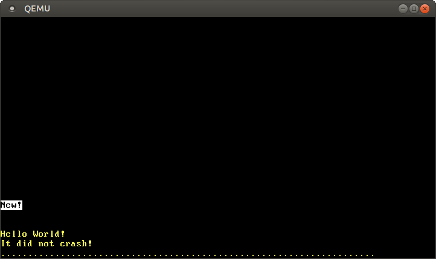

ページングの実装
この記事は翻訳されたものです： この記事はPaging Implementationをコミュニティの手により翻訳したものです。そのため、翻訳が完全・最新でなかったり、原文にない誤りを含んでいる可能性があります。問題があればこのissue上で報告してください！
翻訳者： @woodyZootopia 及び @garasubo.
この記事では私達のカーネルをページングに対応させる方法についてお伝えします。まずページテーブルの物理フレームにカーネルがアクセスできるようにする様々な方法を示し、それらの利点と欠点について議論します。次にアドレス変換関数を、ついで新しい対応付けを作るための関数を実装します。
このブログの内容は GitHub 上で公開・開発されています。何か問題や質問などがあれば issue をたててください (訳注: リンクは原文(英語)のものになります)。またこちらにコメントを残すこともできます。この記事の完全なソースコードはpost-09 ブランチにあります。
目次
🔗導入
1つ前の記事ではページングの概念を説明しました。セグメンテーションと比較することによってページングのメリットを示し、ページングとページテーブルの仕組みを説明し、そしてx86_64における4層ページテーブルの設計を導入しました。ブートローダはすでにページテーブルの階層構造を設定してしまっているので、私達のカーネルは既に仮想アドレス上で動いているということを学びました。これにより、不正なメモリアクセスは、任意の物理メモリを書き換えてしまうのではなくページフォルト例外を発生させるので、安全性が向上しています。
記事の最後で、ページテーブルにカーネルからアクセスできないという問題が起きていました。この問題は、ページテーブルは物理メモリ内に格納されている一方、私達のカーネルは既に仮想アドレス上で実行されているために発生します。この記事ではその続きとして、私達のカーネルからページテーブルのフレームにアクセスするための様々な方法を探ります。それぞれの方法の利点と欠点を議論し、カーネルに採用する手法を決めます。
この方法を実装するには、ブートローダーからの補助が必要になるので、まずこれに設定を加えます。その後で、ページテーブルの階層構造を移動して、仮想アドレスを物理アドレスに変換する関数を実装します。最後に、ページテーブルに新しいマッピングを作る方法と、それを作るための未使用メモリを見つける方法を学びます。
🔗ページテーブルにアクセスする
私達のカーネルからページテーブルにアクセスするのは案外難しいです。この問題を理解するために、前回の記事の4層ページテーブルをもう一度見てみましょう：

ここで重要なのは、それぞれのページテーブルのエントリは次のテーブルの物理アドレスであるということです。これにより、それらのアドレスに対しては変換せずにすみます。もしこの変換が行われたとしたら、性能的にも良くないですし、容易に変換の無限ループに陥りかねません。
問題は、私達のカーネル自体も仮想アドレスの上で動いているため、カーネルから直接物理アドレスにアクセスすることができないということです。例えば、アドレス4KiBにアクセスしたとき、私達は仮想アドレス4KiBにアクセスしているのであって、レベル4ページテーブルが格納されている物理アドレス4KiBにアクセスしているのではありません。物理アドレス4KiBにアクセスしたいなら、それにマップさせられている何らかの仮想アドレスを通じてのみ可能です。
そのため、ページテーブルのフレームにアクセスするためには、どこかの仮想ページをそれにマッピングしなければいけません。このような、任意のページテーブルのフレームにアクセスできるようにしてくれるマッピングを作る方法にはいくつかあります。
🔗恒等マッピング
シンプルな方法として、すべてのページテーブルを恒等対応させるということが考えられるでしょう：

この例では、恒等マップしたいくつかのページテーブルのフレームが見てとれます。こうすることで、ページテーブルの物理アドレスは仮想アドレスと同じ値になり、よってCR3レジスタから始めることで全ての階層のページテーブルに簡単にアクセスできます。
しかし、この方法では仮想アドレス空間が散らかってしまい、大きいサイズの連続したメモリを見つけることが難しくなります。例えば、上の図において、ファイルをメモリにマップするために1000KiBの大きさの仮想メモリ領域を作りたいとします。28KiBを始点として領域を作ろうとすると、1004KiBのところで既存のページと衝突してしまうのでうまくいきません。そのため、1008KiBのような、十分な広さでマッピングのない領域が見つかるまで更に探さないといけません。これはセグメンテーションの時に見た断片化の問題に似ています。
同様に、新しいページテーブルを作ることもずっと難しくなります。なぜなら、対応するページがまだ使われていない物理フレームを見つけないといけないからです。例えば、メモリマップトファイルのために1008KiBから1000KiBにわたって仮想メモリを占有したとしましょう。すると、物理アドレス1000KiBから2008KiBまでのフレームは、もう恒等マッピングを作ることができないので使用することができません。
🔗固定オフセットのマッピング
仮想アドレス空間を散らかしてしまうという問題を回避するために、ページテーブルのマッピングのために別のメモリ領域を使うことができます。ページテーブルを恒等マップさせる代わりに、仮想アドレス空間で一定の補正値をおいてマッピングしてみましょう。例えば、オフセットを10TiBにしてみましょう：

10TiBから10TiB+物理メモリ全体の大きさの範囲の仮想メモリをページテーブルのマッピング専用に使うことで、恒等マップのときに存在していた衝突問題を回避しています。このように巨大な領域を仮想アドレス空間内に用意するのは、仮想アドレス空間が物理メモリの大きさより遥かに大きい場合にのみ可能です。x86_64で用いられている48bit（仮想）アドレス空間は256TiBもの大きさがあるので、これは問題ではありません。
この方法では、新しいページテーブルを作るたびに新しいマッピングを作る必要があるという欠点があります。また、他のアドレス空間のページテーブルにアクセスすることができると新しいプロセスを作るときに便利なのですが、これも不可能です。
🔗物理メモリ全体をマップする
これらの問題はページテーブルのフレームだけと言わず物理メモリ全体をマップしてしまえば解決します：

この方法を使えば、私達のカーネルは他のアドレス空間を含め任意の物理メモリにアクセスできます。用意する仮想メモリの範囲は以前と同じであり、違うのは全てのページがマッピングされているということです。
この方法の欠点は、物理メモリへのマッピングを格納するために、追加でページテーブルが必要になるところです。これらのページテーブルもどこかに格納されなければならず、したがって物理メモリの一部を占有することになります。これはメモリの量が少ないデバイスにおいては問題となりえます。
しかし、x86_64においては、通常の4KiBサイズのページに代わって、大きさ2MiBのhuge pageをマッピングに使うことができます。こうすれば、例えば32GiBの物理メモリをマップするのにはレベル3テーブル1個とレベル2テーブル32個があればいいので、たったの132KiBしか必要ではありません。huge pagesは、トランスレーション・ルックアサイド・バッファ (TLB) のエントリをあまり使わないので、キャッシュ的にも効率が良いです。
🔗一時的な対応
物理メモリの量が非常に限られたデバイスについては、アクセスする必要があるときだけページテーブルのフレームを一時的にマップするという方法が考えられます。そのような一時的なマッピングを作りたいときには、たった一つだけ恒等マップさせられたレベル1テーブルがあれば良いです：

この図におけるレベル1テーブルは仮想アドレス空間の最初の2MiBを制御しています。なぜなら、このテーブルにはCR3レジスタから始めて、レベル4、3、2のページテーブルの0番目のエントリを辿ることで到達できるからです。その8番目のエントリは、アドレス32 KiBの仮想アドレスページをアドレス32 KiBの物理アドレスページにマップするので、レベル1テーブル自体を恒等マップしています。この図ではその恒等マッピングを32 KiBのところの横向きの（茶色の）矢印で表しています。
恒等マップさせたレベル1テーブルに書き込むことによって、カーネルは最大511個の一時的なマッピングを作ることができます（512から、恒等マッピングに必要な1つを除く）。上の例では、カーネルは2つの一時的なマッピングを作りました：
- レベル1テーブルの0番目のエントリをアドレス
24 KiBのフレームにマップすることで、破線の矢印で示されているように0 KiBの仮想ページからレベル2ページテーブルの物理フレームへの一時的なマッピングを行いました。 - レベル1テーブルの9番目のエントリをアドレス
4 KiBのフレームにマップすることで、破線の矢印で示されているように36 KiBの仮想ページからレベル4ページテーブルの物理フレームへの一時的なマッピングを行いました。
これで、カーネルは0 KiBに書き込むことによってレベル2ページテーブルに、36 KiBに書き込むことによってレベル4ページテーブルにアクセスできるようになりました。
任意のページテーブルに一時的なマッピングを用いてアクセスする手続きは以下のようになるでしょう：
- 恒等マッピングしているレベル1テーブルのうち、使われていないエントリを探す。
- そのエントリを私達のアクセスしたいページテーブルの物理フレームにマップする。
- そのエントリにマップされている仮想ページを通じて、対象のフレームにアクセスする。
- エントリを未使用に戻すことで、一時的なマッピングを削除する。
この方法では、同じ512個の仮想ページをマッピングを作成するために再利用するため、物理メモリは4KiBしか必要としません。欠点としては、やや面倒であるということが言えるでしょう。特に、新しいマッピングを作る際に複数のページテーブルの変更が必要になるかもしれず、上の手続きを複数回繰り返さなくてはならないかもしれません。
🔗再帰的ページテーブル
他に興味深いアプローチとして再帰的にページテーブルをマップする方法があり、この方法では追加のページテーブルは一切不要です。発想としては、レベル4ページテーブルのエントリのどれかをレベル4ページテーブル自体にマップするのです。こうすることにより、仮想アドレス空間の一部を予約しておき、現在及び将来のあらゆるページテーブルフレームをその空間にマップしているのと同じことになります。
これがうまく行く理由を説明するために、例を見てみましょう：

この記事の最初での例との唯一の違いは、レベル4テーブルの511番目に、物理フレーム4 KiBすなわちレベル4テーブル自体のフレームにマップされたエントリが追加されていることです。
CPUにこのエントリを辿らせるようにすると、レベル3テーブルではなく、そのレベル4テーブルに再び到達します。これは再帰関数（自らを呼び出す関数）に似ているので、再帰的ページテーブルと呼ばれます。CPUはレベル4テーブルのすべてのエントリはレベル3テーブルを指していると思っているので、CPUはいまレベル4テーブルをレベル3テーブルとして扱っているということに注目してください。これがうまく行くのは、x86_64においてはすべてのレベルのテーブルが全く同じレイアウトを持っているためです。
実際に変換を始める前に、この再帰エントリを1回以上たどることで、CPUのたどる階層の数を短くできます。例えば、一度再帰エントリを辿ったあとでレベル3テーブルに進むと、CPUはレベル3テーブルをレベル2テーブルだと思い込みます。同様に、レベル2テーブルをレベル1テーブルだと、レベル1テーブルをマップされた（物理）フレームだと思います。CPUがこれを物理フレームだと思っているということは、レベル1ページテーブルを読み書きできるということを意味します。下の図はこの5回の変換ステップを示しています：

同様に、変換の前に再帰エントリを2回たどることで、階層移動の回数を2回に減らせます：

ステップごとにこれを見てみましょう：まず、CPUはレベル4テーブルの再帰エントリをたどり、レベル3テーブルに着いたと思い込みます。同じ再帰エントリを再びたどり、レベル2テーブルに着いたと考えます。しかし実際にはまだレベル4テーブルから動いていません。CPUが異なるエントリをたどると、レベル3テーブルに到着するのですが、CPUはレベル1にすでにいるのだと思っています。そのため、次のエントリはレベル2テーブルを指しているのですが、CPUはマップされた物理フレームを指していると思うので、私達はレベル2テーブルを読み書きできるというわけです。
レベル3や4のテーブルにアクセスするのも同じやり方でできます。レベル3テーブルにアクセスするためには、再帰エントリを3回たどることでCPUを騙し、すでにレベル1テーブルにいると思い込ませます。そこで別のエントリをたどりレベル3テーブルに着くと、CPUはそれをマップされたフレームとして扱います。レベル4テーブル自体にアクセスするには、再帰エントリを4回辿ればCPUはそのレベル4テーブル自体をマップされたフレームとして扱ってくれるというわけです（下の青紫の矢印）。

この概念を理解するのは難しいかもしれませんが、実際これは非常にうまく行くのです。
下のセクションでは、再帰エントリをたどるための仮想アドレスを構成する方法について説明します。私達の（OSの）実装には再帰的ページングは使わないので、これを読まずに記事の続きを読み進めても構いません。もし興味がおありでしたら、下の「アドレス計算」をクリックして展開してください。
アドレス計算
実際の変換の前に再帰的移動を1回または複数回行うことですべての階層のテーブルにアクセスできるということを見てきました。4つのテーブルそれぞれのどのインデックスが使われるかは仮想アドレスから直接計算されていましたから、再帰エントリを使うためには特別な仮想アドレスを作り出す必要があります。ページテーブルのインデックスは仮想アドレスから以下のように計算されていたことを思い出してください：

あるページをマップしているレベル1テーブルにアクセスしたいとします。上で学んだように、このためには再帰エントリを1度辿ってからレベル4，3，2のインデックスへと続けていく必要があります。これをするために、それぞれのアドレスブロックを一つ右にずらし、レベル4のインデックスがあったところに再帰エントリのインデックスをセットします：

そのページのレベル2テーブルにアクセスしたい場合、それぞれのブロックを2つ右にずらし、レベル4と3のインデックスがあったところに再帰エントリのインデックスをセットします：

レベル3テーブルにアクセスする場合、それぞれのブロックを3つ右にずらし、レベル4，3，2のインデックスがあったところに再帰インデックスを使います：

最後に、レベル4テーブルにはそれぞれのブロックを4ブロックずらし、オフセットを除いてすべてのアドレスブロックに再帰インデックスを使うことでアクセスできます：

これで、4つの階層すべてのページテーブルの仮想アドレスを計算できます。また、インデックスをページテーブルエントリのサイズ倍、つまり8倍することによって、特定のページテーブルエントリを指すアドレスを計算できます。
下の表は、それぞれの種類のフレームにアクセスするためのアドレス構造をまとめたものです：
| ……の仮想アドレス | アドレス構造（8進） |
|---|---|
| ページ | 0o_SSSSSS_AAA_BBB_CCC_DDD_EEEE |
| レベル1テーブルエントリ | 0o_SSSSSS_RRR_AAA_BBB_CCC_DDDD |
| レベル2テーブルエントリ | 0o_SSSSSS_RRR_RRR_AAA_BBB_CCCC |
| レベル3テーブルエントリ | 0o_SSSSSS_RRR_RRR_RRR_AAA_BBBB |
| レベル4テーブルエントリ | 0o_SSSSSS_RRR_RRR_RRR_RRR_AAAA |
ただし、AAAがレベル4インデックス、BBBがレベル3インデックス、CCCがレベル2インデックス、DDDがマップされたフレームのレベル1インデックス、EEEがオフセットです。RRRが再帰エントリのインデックスです。インデックス（3ケタ）をオフセット（4ケタ）に変換するときは、8倍（ページテーブルエントリのサイズ倍）しています。
SSSSSは符号拡張ビットで、すなわち47番目のビットのコピーです。これはx86_64におけるアドレスの特殊な要求の一つです。これは前回の記事で説明しました。
8進数を用いたのは、8進数の1文字が3ビットを表すため、9ビットからなるそれぞれのページテーブルをきれいに分けることができるためです。4ビットからなる16進ではこうはいきません。
🔗Rustのコードでは……
これらのアドレスをRustのコードで構成するには、ビット演算を用いるとよいです：
// この仮想アドレスに対応するページテーブルにアクセスしたい
let addr: usize = […];
let r = 0o777; // 再帰インデックス
let sign = 0o177777 << 48; // 符号拡張
// 変換したいアドレスのページテーブルインデックスを取得する
let l4_idx = (addr >> 39) & 0o777; // レベル4インデックス
let l3_idx = (addr >> 30) & 0o777; // レベル3インデックス
let l2_idx = (addr >> 21) & 0o777; // レベル2インデックス
let l1_idx = (addr >> 12) & 0o777; // レベル1インデックス
let page_offset = addr & 0o7777;
// テーブルアドレスを計算する
let level_4_table_addr =
sign | (r << 39) | (r << 30) | (r << 21) | (r << 12);
let level_3_table_addr =
sign | (r << 39) | (r << 30) | (r << 21) | (l4_idx << 12);
let level_2_table_addr =
sign | (r << 39) | (r << 30) | (l4_idx << 21) | (l3_idx << 12);
let level_1_table_addr =
sign | (r << 39) | (l4_idx << 30) | (l3_idx << 21) | (l2_idx << 12);
上のコードは、レベル4エントリの最後（インデックス0o777すなわち511）が再帰マッピングしていると仮定しています。この仮定は正しくないので，このコードは動作しません。ブートローダに再帰マッピングを設定させる方法については後述します。
ビット演算を自前で行う代わりに、x86_64クレートのRecursivePageTable型を使うこともできます。これは様々なページ操作の安全な抽象化を提供します。例えば、以下のコードは仮想アドレスをマップされた物理アドレスに変換する方法を示しています。
// in src/memory.rs
use x86_64::structures::paging::{Mapper, Page, PageTable, RecursivePageTable};
use x86_64::{VirtAddr, PhysAddr};
/// レベル4アドレスからRecursivePageTableインスタンスをつくる
let level_4_table_addr = […];
let level_4_table_ptr = level_4_table_addr as *mut PageTable;
let recursive_page_table = unsafe {
let level_4_table = &mut *level_4_table_ptr;
RecursivePageTable::new(level_4_table).unwrap();
}
/// 与えられた仮想アドレスの物理アドレスを取得する
let addr: u64 = […]
let addr = VirtAddr::new(addr);
let page: Page = Page::containing_address(addr);
// 変換を実行する
let frame = recursive_page_table.translate_page(page);
frame.map(|frame| frame.start_address() + u64::from(addr.page_offset()))
繰り返しになりますが、このコード（が正しく実行される）には正しい再帰マッピングがなされていることが必要となります。そのようなマッピングがあるのなら、空欄になっているlevel_4_table_addrは最初のコード例を使って計算すればよいです。
再帰的ページングは、ページテーブルのたった一つのマッピングがいかに強力に使えるかを示す興味深いテクニックです。比較的実装するのが簡単であり、ほとんど設定も必要でない（一つ再帰エントリを作るだけ）ので、ページングを使って最初に実装するのに格好の対象でしょう。
しかし、いくつか欠点もあります：
- 大量の仮想メモリ領域（512GiB）を占有してしまう。私達の使っている48bitアドレス空間は巨大なのでこのことはさしたる問題にはなりませんが、キャッシュの挙動が最適でなくなってしまうかもしれません。
- 現在有効なアドレス空間にしか簡単にはアクセスできない。他のアドレス空間にアクセスするのは再帰エントリを変更することで可能ではあるものの、もとに戻すためには一時的なマッピングが必要。これを行う方法についてはカーネルをリマップする（未訳、また旧版のため情報が古い）という記事を読んでください。
- x86のページテーブルの方式に強く依存しており、他のアーキテクチャでは動作しないかもしれない。
🔗ブートローダによる補助
これらのアプローチはすべて、準備のためにページテーブルに対する修正が必要になります。例えば、物理メモリへのマッピングを作ったり、レベル4テーブルのエントリを再帰的にマッピングしたりなどです。問題は、これらの必要なマッピングを作るためには、すでにページテーブルにアクセスできるようになっていなければいけないということです。
つまり、私達のカーネルが使うページテーブルを作っている、ブートローダの手助けが必要になるということです。ブートローダはページテーブルにアクセスできますから、私達の必要とするどんなマッピングも作れます。bootloaderクレートは上の2つのアプローチをどちらもサポートしており、現在の実装においてはcargoのfeaturesを使ってこれらをコントロールします。
map_physical_memoryfeatureを使うと、全物理メモリを仮想アドレス空間のどこかにマッピングします。そのため、カーネルはすべての物理メモリにアクセスでき、上で述べた方法に従って物理メモリ全体をマップすることができます。recursive_page_tablefeatureでは、ブートローダはレベル4ページテーブルのエントリを再帰的にマッピングします。これによりカーネルは再帰的ページテーブルで述べた方法に従ってページテーブルにアクセスすることができます。
私達のカーネルには、シンプルでプラットフォーム非依存かつ（ページテーブルのフレームでないメモリにもアクセスできるので）より強力である1つ目の方法を採ることにします。必要なブートローダの機能を有効化するために、map_physical_memory featureをbootloaderのdependencyに追加します。
[dependencies]
bootloader = { version = "0.9.23", features = ["map_physical_memory"]}
この機能を有効化すると、ブートローダは物理メモリの全体を、ある未使用の仮想アドレス空間にマッピングします。この仮想アドレスの範囲をカーネルに伝えるために、ブートローダはboot information構造体を渡します。
🔗Boot Information
bootloaderクレートは、カーネルに渡されるすべての情報を格納するBootInfo構造体を定義しています。この構造体はまだ開発の初期段階にあり、将来の対応していないsemverのブートローダのバージョンに更新した際には、うまく動かなくなることが予想されます。map_physical_memory featureが有効化されているので、いまこれはmemory_mapとphysical_memory_offsetという2つのフィールドを持っています：
memory_mapフィールドは、利用可能な物理メモリの情報の概要を保持しています。システムの利用可能な物理メモリがどのくらいかや、どのメモリ領域がVGAハードウェアのようなデバイスのために予約されているかをカーネルに伝えます。これらのメモリマッピングはBIOSやUEFIファームウェアから取得できますが、それが可能なのはブートのごく初期に限られます。そのため、これらをカーネルが後で取得することはできないので、ブートローダによって提供する必要があるわけです。このメモリマッピングは後で必要となります。physical_memory_offsetは、物理メモリのマッピングの始まっている仮想アドレスです。このオフセットを物理アドレスに追加することによって、対応する仮想アドレスを得られます。これによって、カーネルから任意の物理アドレスにアクセスできます。
ブートローダはBootInfo構造体を_start関数の&'static BootInfo引数という形でカーネルに渡します。この引数は私達の関数ではまだ宣言していなかったので追加します：
// in src/main.rs
use bootloader::BootInfo;
#[no_mangle]
pub extern "C" fn _start(boot_info: &'static BootInfo) -> ! { // 新しい引数
[…]
}
今までこの引数を無視していましたが、x86_64の呼出し規約は最初の引数をCPUレジスタに渡していたため、これは問題ではありませんでした。つまり、引数が宣言されていなかったとき、それが単に無視されていたわけです。しかし、もし引数の型を間違えてしまうと、コンパイラが私達のエントリポイント関数の正しい型シグネチャがわからなくなってしまうので問題です。
🔗entry_pointマクロ
私達の_start関数はブートローダから外部呼び出しされるので、私達の関数のシグネチャに対する検査は行われません。これにより、この関数はコンパイルエラーなしにあらゆる引数を取ることができるので、いざ実行時にエラーになったり未定義動作を起こしたりしてしまいます。
私達のエントリポイント関数が常にブートローダの期待する正しいシグネチャを持っていることを保証するために、bootloaderクレートはentry_pointマクロによって、Rustの関数を型チェックしたうえでエントリポイントとして定義する方法を提供します。私達のエントリポイント関数をこのマクロを使って書き直してみましょう：
// in src/main.rs
use bootloader::{BootInfo, entry_point};
entry_point!(kernel_main);
fn kernel_main(boot_info: &'static BootInfo) -> ! {
[…]
}
このマクロがより低レベルな本物の_startエントリポイントを定義してくれるので、extern "C"やno_mangleをエントリポイントに使う必要はもうありません。kernel_main関数は今や完全に普通のRustの関数なので、自由に名前をつけることができます。そして重要なのは、この関数は型チェックされているので、間違った関数シグネチャ（例えば引数を増やしたり引数の型を変えたり）にするとコンパイルエラーが発生するということです。
lib.rsに同じ変更を施しましょう：
// in src/lib.rs
#[cfg(test)]
use bootloader::{entry_point, BootInfo};
#[cfg(test)]
entry_point!(test_kernel_main);
/// `cargo test`のエントリポイント
#[cfg(test)]
fn test_kernel_main(_boot_info: &'static BootInfo) -> ! {
// 前と同じ
init();
test_main();
hlt_loop();
}
こちらのエントリポイントはテストモードのときにのみ使用するので、#[cfg(test)]属性をすべての要素に付しています。main.rsのkernel_main関数と混同しないよう、test_kernel_mainという別の名前をつけました。いまのところBootInfo引数は使わないので、引数名の先頭に_をつけることでunused variable警告が出てくるのを防いでいます。
🔗実装
物理メモリへのアクセスができるようになったので、いよいよページテーブルのコードを実装できます。そのためにまず、現在有効な、私達のカーネルが使用しているページテーブルを見てみます。次に、与えられた仮想アドレスがマップされている物理アドレスを返す変換関数を作ります。最後に、新しいマッピングを作るためにページテーブルを修正してみます。
始める前に、memoryモジュールを作ります：
// in src/lib.rs
pub mod memory;
また、このモジュールに対応するファイルsrc/memory.rsを作ります。
🔗ページテーブルにアクセスする
前の記事の最後で、私達のカーネルの実行しているページテーブルを見てみようとしましたが、CR3レジスタの指す物理フレームにアクセスすることができなかったためそれはできませんでした。この続きとして、active_level_4_tableという、現在有効なレベル4ページテーブルへの参照を返す関数を定義するところから始めましょう：
// in src/memory.rs
use x86_64::{
structures::paging::PageTable,
VirtAddr,
};
/// 有効なレベル4テーブルへの可変参照を返す。
///
/// この関数はunsafeである：全物理メモリが、渡された
/// `physical_memory_offset`（だけずらしたうえ）で
/// 仮想メモリへとマップされていることを呼び出し元が
/// 保証しなければならない。また、`&mut`参照が複数の
/// 名称を持つこと (mutable aliasingといい、動作が未定義)
/// につながるため、この関数は一度しか呼び出してはならない。
pub unsafe fn active_level_4_table(physical_memory_offset: VirtAddr)
-> &'static mut PageTable
{
use x86_64::registers::control::Cr3;
let (level_4_table_frame, _) = Cr3::read();
let phys = level_4_table_frame.start_address();
let virt = physical_memory_offset + phys.as_u64();
let page_table_ptr: *mut PageTable = virt.as_mut_ptr();
&mut *page_table_ptr // unsafe
}
まず、有効なレベル4テーブルの物理フレームをCR3レジスタから読みます。その開始物理アドレスを取り出し、u64に変換し、physical_memory_offsetに足すことでそのページテーブルフレームに対応する仮想アドレスを得ます。最後に、as_mut_ptrメソッドを使ってこの仮想アドレスを*mut PageTable生ポインタに変換し、これから&mut PageTable参照を作ります（ここがunsafe）。&参照ではなく&mut参照にしているのは、後でこのページテーブルを変更するためです。
Rustはunsafe fnの中身全体を大きなunsafeブロックであるかのように扱うので、ここでunsafeブロックを使う必要はありません。これでは、（unsafeを意図した）最後の行より前の行に間違ってunsafeな操作を書いても気づけないので、コードがより危険になります。また、どこがunsafeな操作であるのかを探すのも非常に難しくなります。そのため、この挙動を変更するRFCが提案されています。
この関数を使って、レベル4テーブルのエントリを出力してみましょう：
// in src/main.rs
fn kernel_main(boot_info: &'static BootInfo) -> ! {
use blog_os::memory::active_level_4_table;
use x86_64::VirtAddr;
println!("Hello World{}", "!");
blog_os::init();
let phys_mem_offset = VirtAddr::new(boot_info.physical_memory_offset);
let l4_table = unsafe { active_level_4_table(phys_mem_offset) };
for (i, entry) in l4_table.iter().enumerate() {
if !entry.is_unused() {
println!("L4 Entry {}: {:?}", i, entry);
}
}
// as before
#[cfg(test)]
test_main();
println!("It did not crash!");
blog_os::hlt_loop();
}
まず、BootInfo構造体のphysical_memory_offsetをVirtAddrに変換し、active_level_4_table関数に渡します。つぎにiter関数を使ってページテーブルのエントリをイテレートし、enumerateコンビネータをつかってそれぞれの要素にインデックスiを追加します。全512エントリを出力すると画面に収まらないので、空でないエントリのみ出力します。
実行すると、以下の出力を得ます：

いくつかの空でないエントリがあり、いずれも異なるレベル3テーブルにマップさせられていることがわかります。このようにたくさんの領域があるのは、カーネルコード、カーネルスタック、物理メモリマッピング、ブート情報が互いに離れたメモリ領域を使っているためです。
ページテーブルを更に辿りレベル3テーブルを見るには、エントリに対応するフレームを取り出し再び仮想アドレスに変換すればよいです：
// src/main.rsのforループ内にて……
use x86_64::structures::paging::PageTable;
if !entry.is_unused() {
println!("L4 Entry {}: {:?}", i, entry);
// このエントリから物理アドレスを得て、それを変換する
let phys = entry.frame().unwrap().start_address();
let virt = phys.as_u64() + boot_info.physical_memory_offset;
let ptr = VirtAddr::new(virt).as_mut_ptr();
let l3_table: &PageTable = unsafe { &*ptr };
// レベル3テーブルの空でないエントリを出力する
for (i, entry) in l3_table.iter().enumerate() {
if !entry.is_unused() {
println!(" L3 Entry {}: {:?}", i, entry);
}
}
}
レベル2やレベル1のテーブルも、同じ手続きをレベル3とレベル2のエントリに対して繰り返すことで見ることができます。お察しの通りそれを書くとかなり長くなるので、コードの全てはここには示しません。
ページテーブルを手作業で辿ると、CPUが変換を行う仕組みを理解できて面白いです。しかし、多くの場合は与えられた仮想アドレスに対応する物理アドレスにのみ興味があるので、そのための関数を作りましょう。
🔗アドレスの変換
仮想アドレスを物理アドレスに変換するには、4層のページテーブルを辿って対応するフレームにたどり着けばよいです。この変換を行う関数を作りましょう：
// in src/memory.rs
use x86_64::PhysAddr;
/// 与えられた仮想アドレスを対応する物理アドレスに変換し、
/// そのアドレスがマップされていないなら`None`を返す。
///
/// この関数はunsafeである。なぜなら、呼び出し元は全物理メモリが与えられた
/// `physical_memory_offset`（だけずらした上）でマップされていることを
/// 保証しなくてはならないからである。
pub unsafe fn translate_addr(addr: VirtAddr, physical_memory_offset: VirtAddr)
-> Option<PhysAddr>
{
translate_addr_inner(addr, physical_memory_offset)
}
unsafeの範囲を制限するために、この関数は、すぐにunsafeでないtranslate_addr_inner関数に制御を渡しています。先に述べたように、Rustはunsafeな関数の全体をunsafeブロックとして扱ってしまいます。呼び出した非公開のunsafeでない関数の中にコードを書くことで、それぞれのunsafeな操作を明確にします。
非公開な内部の関数に本当の実装を書いていきます：
// in src/memory.rs
/// `translate_addr`により呼び出される非公開関数。
///
/// Rustはunsafeな関数の全体をunsafeブロックとして扱ってしまうので、
/// unsafeの範囲を絞るためにこの関数はunsafeにしていない。
/// この関数をモジュール外から呼び出すときは、
/// unsafeな関数`translate_addr`を使って呼び出すこと。
fn translate_addr_inner(addr: VirtAddr, physical_memory_offset: VirtAddr)
-> Option<PhysAddr>
{
use x86_64::structures::paging::page_table::FrameError;
use x86_64::registers::control::Cr3;
// 有効なレベル4フレームをCR3レジスタから読む
let (level_4_table_frame, _) = Cr3::read();
let table_indexes = [
addr.p4_index(), addr.p3_index(), addr.p2_index(), addr.p1_index()
];
let mut frame = level_4_table_frame;
// 複数層のページテーブルを辿る
for &index in &table_indexes {
// フレームをページテーブルの参照に変換する
let virt = physical_memory_offset + frame.start_address().as_u64();
let table_ptr: *const PageTable = virt.as_ptr();
let table = unsafe {&*table_ptr};
// ページテーブルエントリを読んで、`frame`を更新する
let entry = &table[index];
frame = match entry.frame() {
Ok(frame) => frame,
Err(FrameError::FrameNotPresent) => return None,
Err(FrameError::HugeFrame) => panic!("huge pages not supported"),
//huge pageはサポートしていません
};
}
// ページオフセットを足すことで、目的の物理アドレスを計算する
Some(frame.start_address() + u64::from(addr.page_offset()))
}
先程作ったactive_level_4_table関数を再利用せず、CR3レジスタからレベル4フレームを読み出すコードを再び書いています。これは簡単に試作するためであり、後でもっと良い方法で作り直すのでご心配なく。
Virtaddr構造体には、（仮想メモリの）インデックスから4つの階層のページテーブルを計算してくれるメソッドが備わっています。この4つのインデックスを配列に格納することで、これらをforループを使って辿ります。forループを抜けたら、最後に計算したframeを覚えているので、物理アドレスを計算できます。このframeは、forループの中ではページテーブルのフレームを指していて、最後のループのあと（すなわちレベル1エントリを辿ったあと）では対応する（物理）フレームを指しています。
ループの中では、前と同じようにphysical_memory_offsetを使ってフレームをページテーブルの参照に変換します。次に、そのページテーブルのエントリを読み、PageTableEntry::frame関数を使って対応するフレームを取得します。もしエントリがフレームにマップされていなければNoneを返します。もしエントリが2MiBや1GiBのhuge pageにマップされていたら、今のところはpanicすることにします。
いくつかのアドレスを変換して、この変換関数がうまく行くかテストしてみましょう：
// in src/main.rs
fn kernel_main(boot_info: &'static BootInfo) -> ! {
// 新しいインポート
use blog_os::memory::translate_addr;
[…] // hello world と blog_os::init
let phys_mem_offset = VirtAddr::new(boot_info.physical_memory_offset);
let addresses = [
// 恒等対応しているVGAバッファのページ
0xb8000,
// コードページのどこか
0x201008,
// スタックページのどこか
0x0100_0020_1a10,
// 物理アドレス "0" にマップされている仮想アドレス
boot_info.physical_memory_offset,
];
for &address in &addresses {
let virt = VirtAddr::new(address);
let phys = unsafe { translate_addr(virt, phys_mem_offset) };
println!("{:?} -> {:?}", virt, phys);
}
[…] // test_main(), "it did not crash" の出力, および hlt_loop()
}
実行すると、以下の出力を得ます：

期待したとおり、恒等マップしているアドレス0xb8000は同じ物理アドレスに変換されました。コードページとスタックページは物理アドレスのどこかしかに変換されていますが、その場所はブートローダがカーネルの初期マッピングをどのようにつくったかによります。また、下から12ビットは変換のあとも常に同じであるということも注目に値します：この部分はページオフセットであり、変換には関わらないためです。
それぞれの物理アドレスはphysical_memory_offsetを足すことでアクセスできるわけですから、physical_memory_offset自体を変換すると物理アドレス0を指すはずです。しかし、効率よくマッピングを行うためにここではhuge pageが使われており、これはまだサポートしていないので変換には失敗しています。
🔗OffsetPageTableを使う
仮想アドレスから物理アドレスへの変換はOSのカーネルがよく行うことですから、x86_64クレートはそのための抽象化を提供しています。この実装はすでにhuge pageやtranslate_addr以外の様々な関数もサポートしているので、以下ではhuge pageのサポートを自前で実装する代わりにこれを使うことにします。
この抽象化の基礎となっているのは、様々なページテーブルマッピング関数を定義している2つのトレイトです。
Mapperトレイトはページサイズを型引数とする汎用型で、ページに対して操作を行う関数を提供します。例えば、translate_pageは与えられたページを同じサイズのフレームに変換し、map_toはページテーブルに新しいマッピングを作成します。Translateトレイトはtranslate_addrや一般のtranslateのような、さまざまなページサイズに対して動くような関数を提供します。
これらのトレイトはインターフェイスを定義しているだけであり、その実装は何一つ提供していません。x86_64クレートは現在、このトレイトを実装する型を異なる要件に合わせて3つ用意しています。OffsetPageTable型は、全物理メモリがあるオフセットで仮想アドレスにマップしていることを前提とします。MappedPageTableはもう少し融通が効き、それぞれのページテーブルフレームが（そのフレームから）計算可能な仮想アドレスにマップしていることだけを前提とします。最後にRecursivePageTable型は、ページテーブルのフレームに再帰的ページテーブルを使ってアクセスするときに使えます。
私達の場合、ブートローダは全物理メモリをphysical_memory_offset変数で指定された仮想アドレスで物理メモリにマップしているので、OffsetPageTable型が使えます。これを初期化するために、memoryモジュールに新しくinit関数を作りましょう：
use x86_64::structures::paging::OffsetPageTable;
/// 新しいOffsetPageTableを初期化する。
///
/// この関数はunsafeである：全物理メモリが、渡された
/// `physical_memory_offset`（だけずらしたうえ）で
/// 仮想メモリへとマップされていることを呼び出し元が
/// 保証しなければならない。また、`&mut`参照が複数の
/// 名称を持つこと (mutable aliasingといい、動作が未定義)
/// につながるため、この関数は一度しか呼び出してはならない。
pub unsafe fn init(physical_memory_offset: VirtAddr) -> OffsetPageTable<'static> {
let level_4_table = active_level_4_table(physical_memory_offset);
OffsetPageTable::new(level_4_table, physical_memory_offset)
}
// これは非公開にする
unsafe fn active_level_4_table(physical_memory_offset: VirtAddr)
-> &'static mut PageTable
{…}
この関数はphysical_memory_offsetを引数としてとり、'staticライフタイムを持つOffsetPageTableを作って返します。このライフタイムは、私達のカーネルが実行している間この実体はずっと有効であるという意味です。関数の中ではまずactive_level_4_table関数を呼び出し、レベル4ページテーブルへの可変参照を取得します。次にOffsetPageTable::new関数をこの参照を使って呼び出します。このnew関数の第二引数には、物理メモリのマッピングの始まる仮想アドレスが入ることになっています。つまりphysical_memory_offsetです。
可変参照が複数の名称を持つと未定義動作を起こす可能性があるので、今後active_level_4_table関数はinit関数から一度呼び出されることを除いては呼び出されてはなりません。そのため、pub指定子を外してこの関数を非公開にしています。
これで、自前のmemory::translate_addr関数の代わりにTranslate::translate_addrメソッドを使うことができます。これにはkernel_mainを数行だけ書き換えればよいです：
// in src/main.rs
fn kernel_main(boot_info: &'static BootInfo) -> ! {
// インポートが追加・変更されている
use blog_os::memory;
use x86_64::{structures::paging::Translate, VirtAddr};
[…] // hello worldとblog_os::init
let phys_mem_offset = VirtAddr::new(boot_info.physical_memory_offset);
// 追加：mapperを初期化
let mapper = unsafe { memory::init(phys_mem_offset) };
let addresses = […]; // 前と同じ
for &address in &addresses {
let virt = VirtAddr::new(address);
// 追加：`mapper.translate_addr`メソッドを使う
let phys = mapper.translate_addr(virt);
println!("{:?} -> {:?}", virt, phys);
}
[…] // test_main(), "it did not crash" の出力, および hlt_loop()
}
translate_addrメソッドを使うために、それを提供しているTranslateトレイトをインポートする必要があります。
これを実行すると、同じ変換結果が得られますが、今度はhuge pageの変換もうまく行っています：

想定通り、0xb8000やコード・スタックアドレスの変換結果は自前の変換関数と同じになっています。また、physical_memory_offsetは物理アドレス0x0にマップされているのもわかります。
MappedPageTable型の変換関数を使うことで、huge pageをサポートする手間が省けます。またmap_toのような他のページング関数も利用でき、これは次のセクションで使います。
この時点で、自作したmemory::translate_addr関数やmemory::translate_addr_inner関数はもう必要ではないので削除して構いません。
🔗新しいマッピングを作る
これまでページテーブルを見てきましたが、それに対する変更は行っていませんでした。ページテーブルに対する変更として、マッピングのなかったページにマッピングを作ってみましょう。
これを実装するにはMapperトレイトのmap_to関数を使うので、この関数について少し見てみましょう。ドキュメントによると四つ引数があります：マッピングに使うページ、ページをマップさせるフレーム、ページテーブルエントリにつかうフラグの集合、そしてframe_allocatorです。フレームアロケータ（フレームを割り当てる機能を持つ）が必要な理由は、与えられたページをマップするために追加でページテーブルを作成する必要があるかもしれず、これを格納するためには使われていないフレームが必要となるからです。
🔗create_example_mapping関数
私達が実装していく最初のステップとして、create_example_mapping関数という、与えられた仮想ページを0xb8000すなわちVGAテキストバッファの物理フレームにマップする関数を作ってみましょう。このフレームを選んだ理由は、マッピングが正しくなされたかをテストするのが容易だからです：マッピングしたページに書き込んで、それが画面に現れるか確認するだけでよいのですから。
create_example_mappingは以下のようになります：
// in src/memory.rs
use x86_64::{
PhysAddr,
structures::paging::{Page, PhysFrame, Mapper, Size4KiB, FrameAllocator}
};
/// 与えられたページをフレーム`0xb8000`に試しにマップする。
pub fn create_example_mapping(
page: Page,
mapper: &mut OffsetPageTable,
frame_allocator: &mut impl FrameAllocator<Size4KiB>,
) {
use x86_64::structures::paging::PageTableFlags as Flags;
let frame = PhysFrame::containing_address(PhysAddr::new(0xb8000));
let flags = Flags::PRESENT | Flags::WRITABLE;
let map_to_result = unsafe {
// FIXME: unsafeであり、テストのためにのみ行う
mapper.map_to(page, frame, flags, frame_allocator)
};
map_to_result.expect("map_to failed").flush();
}
この関数は、マップするpageに加えOffsetPageTableのインスタンスとframe_allocatorへの可変参照を引数に取ります。frame_allocator引数はimpl Trait構文によりFrameAllocatorトレイトを実装するあらゆる型の汎用型になっています。FrameAllocatorトレイトはPageSizeトレイトを実装するなら（トレイト引数のサイズが）4KiBでも2MiBや1GiBのhuge pageでも構わない汎用トレイトです。私達は4KiBのマッピングのみを作りたいので、ジェネリック引数はSize4KiBにしています。
map_toメソッドは、呼び出し元がフレームはまだ使われていないことを保証しないといけないので、unsafeです。なぜなら、同じフレームを二度マップすると（例えば2つの異なる&mut参照が物理メモリの同じ場所を指すことで）未定義動作を起こす可能性があるからです。今回、VGAテキストバッファのフレームという、すでにマップされているフレームを再度使っているので、この要件を破ってしまっています。しかしながら、create_example_mapping関数は一時的なテスト関数であり、この記事のあとには取り除かれるので大丈夫です。この危険性のことを忘れないようにするために、その行にFIXMEコメントをつけておきます。
map_to関数がpageとunused_frameに加えてフラグの集合とframe_allocatorへの参照を取りますが、これについてはすぐに説明します。フラグについては、PRESENTフラグという有効なエントリ全てに必須のフラグと、WRITABLEフラグという対応するページを書き込み可能にするフラグをセットしています。フラグの一覧については、前記事のページテーブルの形式を参照してください。
map_to関数は失敗しうるので、Resultを返します。これは失敗しても構わない単なるテストコードなので、エラーが起きたときはexpectを使ってパニックしてしまうことにします。この関数は成功したときMapperFlush型を返します。この型のflushメソッドを使うと、新しくマッピングしたページをトランスレーション・ルックアサイド・バッファ (TLB) から簡単にflushすることができます。この型はResultと同じく#[must_use]属性を使っており、使用し忘れると警告を出します。
🔗ダミーのFrameAllocator
create_example_mapping関数を呼べるようにするためには、まずFrameAllocatorトレイトを実装する型を作成する必要があります。上で述べたように、このトレイトは新しいページのためのフレームをmap_toが必要としたときに割り当てる役割を持っています。
単純なケースを考えましょう：新しいページテーブルを作る必要がないと仮定してしまいます。この場合、常にNoneを返すフレームアロケータで十分です。私達のマッピング関数をテストするために、そのようなEmptyFrameAllocatorを作ります。
// in src/memory.rs
/// つねに`None`を返すFrameAllocator
pub struct EmptyFrameAllocator;
unsafe impl FrameAllocator<Size4KiB> for EmptyFrameAllocator {
fn allocate_frame(&mut self) -> Option<PhysFrame> {
None
}
}
FrameAllocatorを実装するのはunsafeです。なぜなら、実装する人は、実装したアロケータが未使用のフレームのみ取得することを保証しなければならないからです。さもなくば、例えば二つの仮想ページが同じ物理フレームにマップされたときに未定義動作が起こるかもしれません。このEmptyFrameAllocatorはNoneしか返さないので、これは問題ではありません。
🔗仮想ページを選ぶ
create_example_mapping関数に渡すための単純なフレームアロケータを手に入れました。しかし、このアロケータは常にNoneを返すので、マッピングを作る際に追加のページテーブルフレームが必要でなかったときにのみうまく動作します。いつ追加のページテーブルフレームが必要でありいつそうでないのかを知るために、例をとって考えてみましょう：

この図の左は仮想アドレス空間を、右は物理アドレス空間を、真ん中はページテーブルを示します。このページテーブルが格納されている物理フレームが破線で示されています。仮想アドレス空間は一つのマップされたページをアドレス0x803fe00000に持っており、これは青色で示されています。このページをフレームに変換するために、CPUは4層のページテーブルを辿り、アドレス36KiBのフレームに到達します。
また、この図はVGAテキストバッファの物理フレームを赤色で示しています。私達の目的は、create_example_mapping関数を使ってまだマップされていない仮想ページをこのフレームにマップすることです。私達のEmptyFrameAllocatorは常にNoneを返すので、アロケータからフレームを追加する必要がないようにマッピングを作りたいです。これができるかは、私達がマッピングにどの仮想ページを使うかに依存します。
この図の仮想アドレス空間には、2つの候補となるページを黄色で示しています。ページのうち一つはアドレス0x803fe00000で、これは（青で示された）マップされているページの3つ前です。レベル4と3のテーブルのインデックスは青いページと同じですが、レベル2と1のインデックスは違います（前の記事を参照）。レベル2テーブルのインデックスが違うということは、異なるレベル1テーブルが使われることを意味します。そんなレベル1テーブルは存在しないので、もしこちらを使っていたら、使われていない物理フレームを追加（でアロケート）する必要が出てきます。対して、2つ目のアドレス0x803fe02000にある候補のページは、青のページと同じレベル1ページテーブルを使うのでこの問題は発生しません。よって、必要となるすべてのページテーブルはすでに存在しています。
まとめると、新しいマッピングを作るときの難易度は、マッピングしようとしている仮想ページに依存するということです。作ろうとしているページのレベル1ページテーブルがすでに存在すると最も簡単で、エントリをそのページに一つ書き込むだけです。ページがレベル3のテーブルすら存在しない領域にある場合が最も難しく、その場合まずレベル3，2，1のページテーブルを新しく作る必要があります。
EmptyFrameAllocatorを使ってcreate_example_mappingを呼び出すためには、すべての（階層の）ページテーブルがすでに存在しているページを選ぶ必要があります。そんなページを探すにあたっては、ブートローダが自分自身を仮想アドレス空間の最初の1メガバイトに読み込んでいるということを利用できます。つまり、この領域のすべてのページについて、レベル1テーブルがきちんと存在しているということです。したがって、試しにマッピングを作るときに、このメモリ領域のいずれかの未使用ページ、例えばアドレス0を使えばよいです。普通このページは、ヌルポインタの参照外しがページフォルトを引き起こすことを保証するために使用しないので、ブートローダもここをマップさせてはいないはずです。
🔗マッピングを作る
というわけで、create_example_mapping関数を呼び出すために必要なすべての引数を手に入れたので、仮想アドレス0をマップするようkernel_main関数を変更していきましょう。このページをVGAテキストバッファのフレームにマップすると、以後、画面に書き込むことができるようになるはずです。実装は以下のようになります：
// in src/main.rs
fn kernel_main(boot_info: &'static BootInfo) -> ! {
use blog_os::memory;
use x86_64::{structures::paging::Page, VirtAddr}; // 新しいインポート
[…] // hello worldとblog_os::init
let phys_mem_offset = VirtAddr::new(boot_info.physical_memory_offset);
let mut mapper = unsafe { memory::init(phys_mem_offset) };
let mut frame_allocator = memory::EmptyFrameAllocator;
// 未使用のページをマップする
let page = Page::containing_address(VirtAddr::new(0));
memory::create_example_mapping(page, &mut mapper, &mut frame_allocator);
// 新しいマッピングを使って、文字列`New!`を画面に書き出す
let page_ptr: *mut u64 = page.start_address().as_mut_ptr();
unsafe { page_ptr.offset(400).write_volatile(0x_f021_f077_f065_f04e)};
[…] // test_main(), "it did not crash" printing, および hlt_loop()
}
まず、mapperとframe_allocatorインスタンスの可変参照を渡してcreate_example_mappingを呼ぶことで、アドレス0のページにマッピングを作っています。これはVGAテキストバッファのフレームにマップしているので、これに書き込んだものは何であれ画面に出てくるはずです。
次にページを生ポインタに変更して、オフセット400に値を書き込みます。このページの最初に書き込むとVGAバッファの一番上の行になり、次のprintlnで即座に画面外に流れていってしまうので、それを避けています。値0x_f021_f077_f065_f04eは、白背景の“New!“という文字列を表します。VGAテキストモードの記事で学んだように、VGAバッファへの書き込みはvolatileでなければならないので、write_volatileメソッドを使っています。
QEMUで実行すると、以下の出力を得ます：

画面の “New!” はページ0への書き込みによるものなので、ページテーブルへの新しいマッピングの作成が成功したということを意味します。
このマッピングが成功したのは、アドレス0を管轄するレベル1テーブルがすでに存在していたからに過ぎません。レベル1テーブルがまだ存在しないページをマッピングしようとすると、map_to関数は新しいページテーブルを作るためにEmptyFrameAllocatorからフレームを割り当てようとしてエラーになります。0の代わりに0xdeadbeaf000をマッピングしようとするとそれが発生するのが見られます。
// in src/main.rs
fn kernel_main(boot_info: &'static BootInfo) -> ! {
[…]
let page = Page::containing_address(VirtAddr::new(0xdeadbeaf000));
[…]
}
これを実行すると、以下のエラーメッセージとともにパニックします：
panicked at 'map_to failed: FrameAllocationFailed', /…/result.rs:999:5
レベル1テーブルがまだ存在していないページをマップするためには、ちゃんとしたFrameAllocatorを作らないといけません。しかし、どのフレームが未使用で、どのフレームが利用可能かはどうすればわかるのでしょう？
🔗フレームを割り当てる
新しいページテーブルを作成するためには、ちゃんとしたフレームアロケータを作る必要があります。このためには、ブートローダによって渡されるBootInfo構造体の一部であるmemory_mapを使います：
// in src/memory.rs
use bootloader::bootinfo::MemoryMap;
/// ブートローダのメモリマップから、使用可能な
/// フレームを返すFrameAllocator
pub struct BootInfoFrameAllocator {
memory_map: &'static MemoryMap,
next: usize,
}
impl BootInfoFrameAllocator {
/// 渡されたメモリマップからFrameAllocatorを作る。
///
/// この関数はunsafeである：呼び出し元は渡された
/// メモリマップが有効であることを保証しなければ
/// ならない。特に、`USABLE`なフレームは実際に
/// 未使用でなくてはならない。
pub unsafe fn init(memory_map: &'static MemoryMap) -> Self {
BootInfoFrameAllocator {
memory_map,
next: 0,
}
}
}
この構造体は2つのフィールドを持ちます。ブートローダによって渡されたメモリマップへの'staticな参照と、アロケータが次に返すべきフレームの番号を覚えておくためのnextフィールドです。
Boot Information節で説明したように、このメモリマップはBIOS/UEFIファームウェアから提供されます。これはブートプロセスのごく初期にのみ取得できますが、ブートローダがそのための関数を既に呼んでくれています。メモリマップはMemoryRegion構造体のリストからなり、この構造体はそれぞれのメモリ領域の開始アドレス、長さ、型（未使用か、予約済みかなど）を格納しています。
init関数はBootInfoFrameAllocatorを与えられたメモリマップで初期化します。nextフィールドは0で初期化し、フレームを割当てるたびに値を増やすことで同じフレームを二度返すことを防ぎます。メモリマップのusableとされているフレームが他のどこかで使われたりしていないかは知ることができないので、このinit関数はそれを呼び出し元に追加で保証させるためにunsafeでないといけません。
🔗usable_framesメソッド
FrameAllocatorトレイトを実装していく前に、渡されたメモリマップをusableなフレームのイテレータに変換する補助メソッドを追加します：
// in src/memory.rs
use bootloader::bootinfo::MemoryRegionType;
impl BootInfoFrameAllocator {
/// メモリマップによって指定されたusableなフレームのイテレータを返す。
fn usable_frames(&self) -> impl Iterator<Item = PhysFrame> {
// メモリマップからusableな領域を得る
let regions = self.memory_map.iter();
let usable_regions = regions
.filter(|r| r.region_type == MemoryRegionType::Usable);
// それぞれの領域をアドレス範囲にmapで変換する
let addr_ranges = usable_regions
.map(|r| r.range.start_addr()..r.range.end_addr());
// フレームの開始アドレスのイテレータへと変換する
let frame_addresses = addr_ranges.flat_map(|r| r.step_by(4096));
// 開始アドレスから`PhysFrame`型を作る
frame_addresses.map(|addr| PhysFrame::containing_address(PhysAddr::new(addr)))
}
}
この関数はイテレータのコンビネータメソッドを使って、最初に与えられるMemoryMapを使用可能な物理フレームのイテレータに変換します：
- まず
iterメソッドを使ってメモリマップをMemoryRegionのイテレータに変える。 - 次に
filterメソッドを使って、予約済みなどの理由で使用不可能な領域を飛ばすようにする。ブートローダは作ったマッピングに使ったメモリマップはきちんと更新するので、私達のカーネル（コード、データ、スタック）に使われているフレームやブート情報を格納するのに使われているフレームはすでにInUseなどでマークされています。そのためUsableなフレームは他の場所では使われていないはずとわかります。 - つぎに、
mapコンビネータとRustのrange構文を使って、メモリ領域のイテレータからアドレス範囲のイテレータへと変換する。 - つぎに、アドレス範囲から
step_byで4096個ごとにアドレスを選び、flat_mapを使うことでフレームの最初のアドレスのイテレータを得る。4096バイト（＝4KiB）はページのサイズに等しいので、それぞれのフレームの開始地点のアドレスが得られます。ブートローダのページは使用可能なメモリ領域をすべてアラインするので、ここで改めてアラインや丸めを行う必要はありません。mapではなくflat_mapを使うことで、Iterator<Item = Iterator<Item = u64>>ではなくIterator<Item = u64>を得ています。 - 最後に、開始アドレスの型を
PhysFrameに変更することでIterator<Item = PhysFrame>を得ている。
この関数の戻り型はimpl Trait機能を用いています。こうすると、PhysFrameをitemの型として持つようなIteratorトレイトを実装する何らかの型を返すのだと指定できます。これは重要です――なぜなら、戻り値の型は名前のつけられないクロージャ型に依存し、具体的な名前をつけるのが不可能だからです。
🔗FrameAllocatorトレイトを実装する
これでFrameAllocatorトレイトを実装できます：
// in src/memory.rs
unsafe impl FrameAllocator<Size4KiB> for BootInfoFrameAllocator {
fn allocate_frame(&mut self) -> Option<PhysFrame> {
let frame = self.usable_frames().nth(self.next);
self.next += 1;
frame
}
}
まずusable_framesメソッドを使ってメモリマップからusableなフレームのイテレータを得ます。つぎに、Iterator::nth関数でself.next番目の（つまり(self.next - 1)だけ飛ばして）フレームを得ます。このフレームを返してリターンする前に、self.nextを1だけ増やして次の呼び出しで1つ後のフレームが得られるようにします。
この実装は割当てを行うごとにusable_framesアロケータを作り直しているので、最適とは言い難いです。イテレータを構造体のフィールドとして直接格納するほうが良いでしょう。するとnthメソッドを使う必要はなくなり、割り当てのたびにnextを使えばいいだけです。このアプローチの問題は、今の所構造体のフィールドにimpl Trait型（の変数）を格納することができないことです。いつの日か、named existential typeが完全に実装されたときにはこれが可能になるかもしれません。
🔗BootInfoFrameAllocatorを使う
kernel_main関数を修正してEmptyFrameAllocatorのインスタンスの代わりにBootInfoFrameAllocatorを渡しましょう：
// in src/main.rs
fn kernel_main(boot_info: &'static BootInfo) -> ! {
use blog_os::memory::BootInfoFrameAllocator;
[…]
let mut frame_allocator = unsafe {
BootInfoFrameAllocator::init(&boot_info.memory_map)
};
[…]
}
ブート情報を使うフレームアロケータのおかげでマッピングは成功し、白背景に黒文字の“New!“が再び画面に現れました。舞台裏では、map_toメソッドが不足しているページテーブルを以下のやり方で作っています：
- 渡された
frame_allocatorを使って未使用のフレームを割り当ててもらう。 - フレームをゼロで埋めることで、新しい空のページテーブルを作る。
- 上位のテーブルのエントリをそのフレームにマップする。
- 次の層で同じことを続ける。
create_example_mapping関数はただのお試しコードにすぎませんが、今や私達は任意のページにマッピングを作れるようになりました。これは、今後の記事で行うメモリ割り当てやマルチスレッディングにおいて不可欠です。
上で説明したような未定義動作を誤って引き起こしてしまうことのないよう、この時点でcreate_example_mapping関数を再び取り除いておきましょう。
🔗まとめ
この記事ではページテーブルのある物理フレームにアクセスするための様々なテクニックを学びました。恒等マップ、物理メモリ全体のマッピング、一時的なマッピング、再帰的ページテーブルなどです。このうち、シンプルでポータブルで強力な、物理メモリ全体のマッピングを選びました。
ページテーブルにアクセスできなければ物理メモリをマップされないので、ブートローダの補助が必要でした。bootloaderクレートはcargoのfeaturesというオプションを通じて、必要となるマッピングの作成をサポートしています。さらに、必要となる情報をエントリポイント関数の&BootInfo引数という形で私達のカーネルに渡してくれます。
実装についてですが、最初はページテーブルを辿る変換関数を自分の手で実装し、そのあとでx86_64クレートのMappedPageTable型を使いました。また、ページテーブルに新しいマッピングを作る方法や、そのために必要なFrameAllocatorをブートローダに渡されたメモリマップをラップすることで作る方法を学びました。
🔗次は？
次の記事では、私達のカーネルのためのヒープメモリ領域を作り、それによってメモリの割り当てを行ったり各種のコレクション型を使うことが可能になります。
コメント
Do you have a problem, want to share feedback, or discuss further ideas? Feel free to leave a comment here! Please stick to English and follow Rust's code of conduct. This comment thread directly maps to a discussion on GitHub, so you can also comment there if you prefer.
Instead of authenticating the giscus application, you can also comment directly on GitHub.
可能な限りコメントは英語で残すようにしてください。